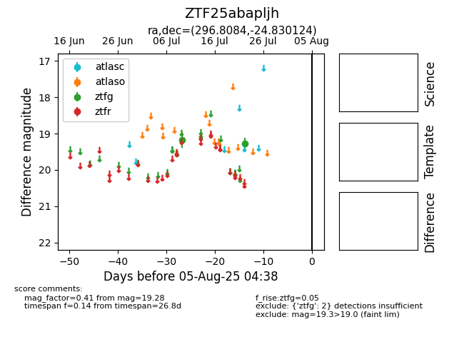

Target ZTF25abapljh at 2025-08-05 04:38, see:
FINK: fink-portal.org/ZTF25abapljh
Lasair: lasair-ztf.lsst.ac.uk/objects/ZTF25abapljh
ALeRCE: alerce.online/object/ZTF25abapljh
alt names
ZTF25abapljh (ztf,fink)
coordinates:
equatorial (ra, dec) = (296.8084,-24.83012)
galactic (l, b) = (15.6534,-22.71742)
photometry
last ztfg=19.28
2 ztfg detections
